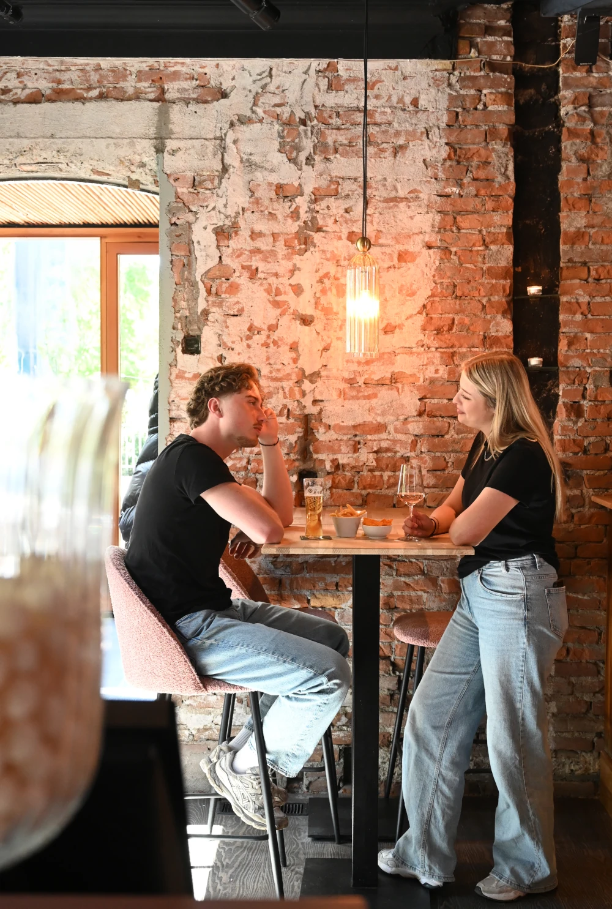
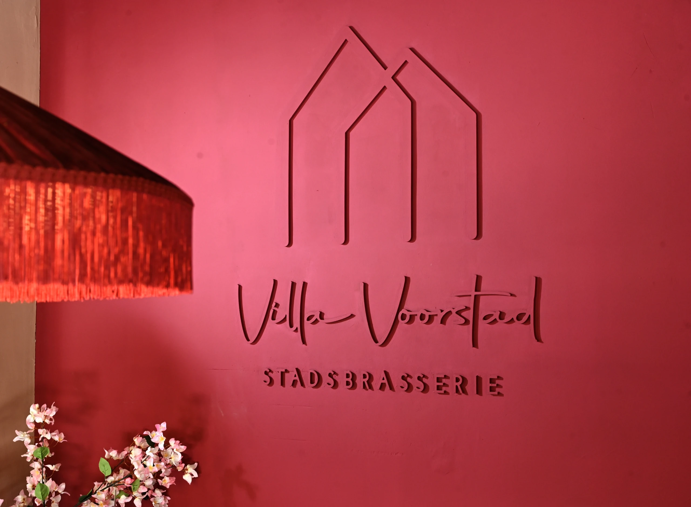
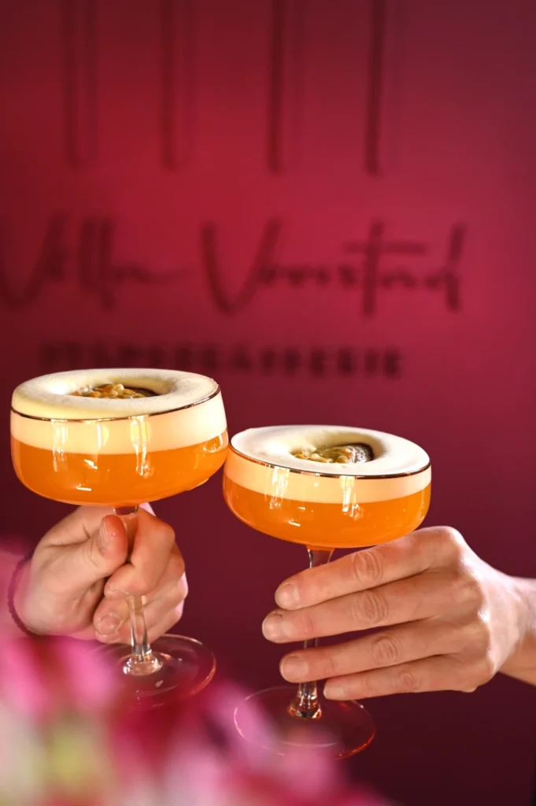
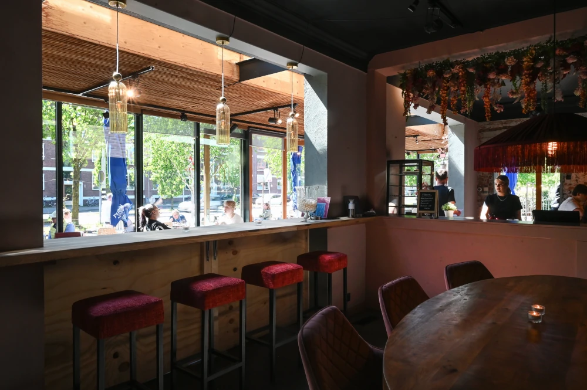
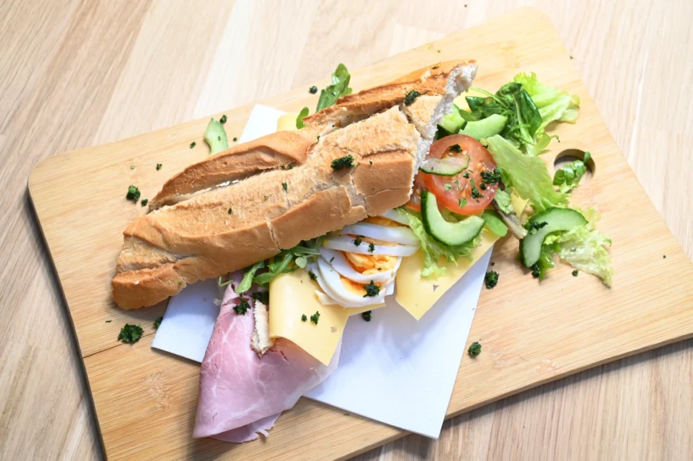
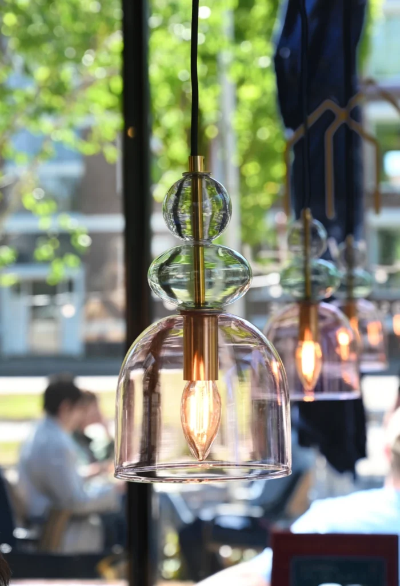
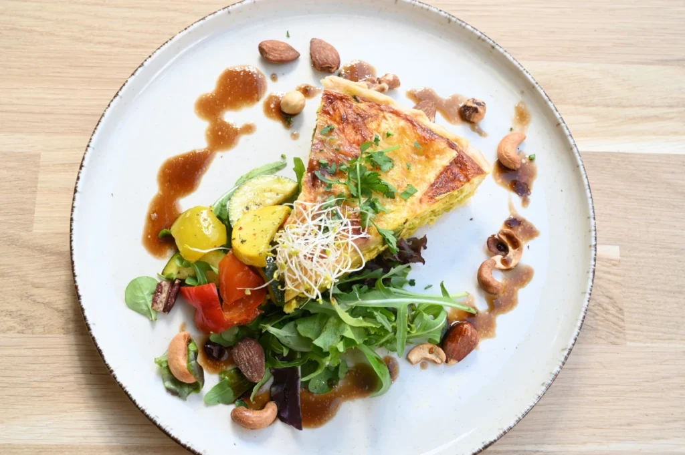
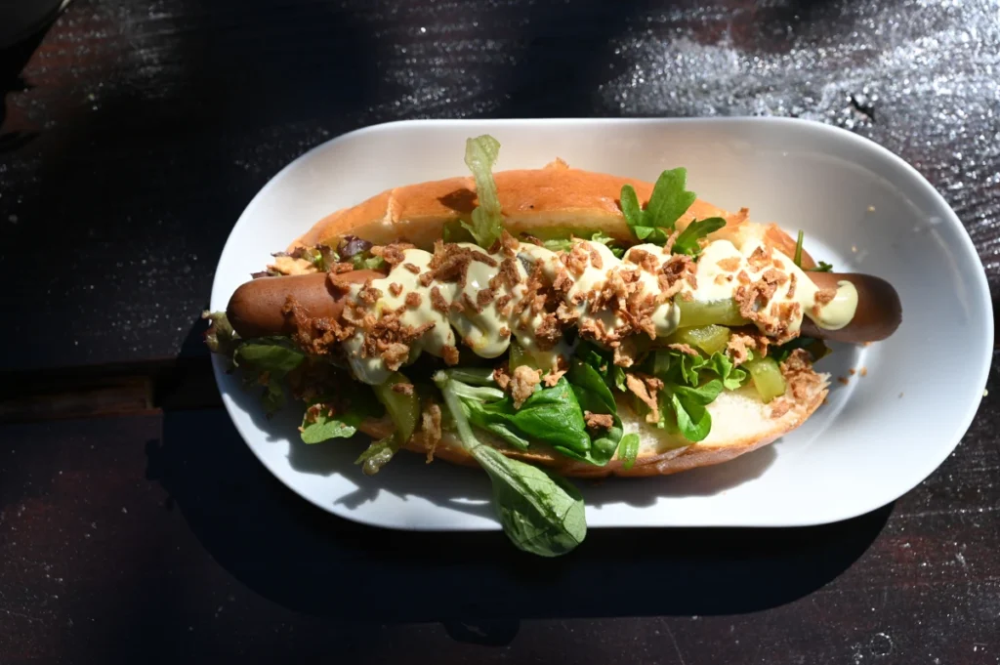
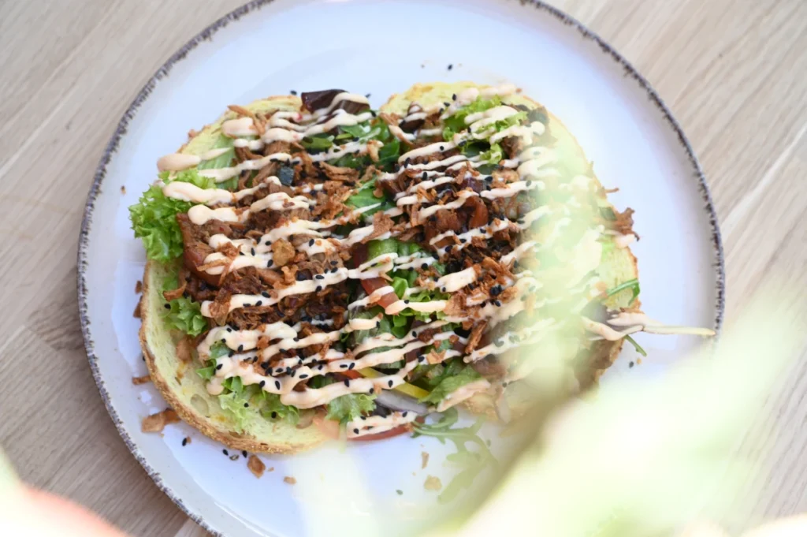

Diner van 2 gangen
2 gangen naar keuze met een drankje voor 29,50
Het 2-gangenmenu is beschikbaar tot 6 personen. Geef van tevoren even aan dat je hier gebruik van wilt maken.
Bel om te reserverenStadsbrasserie in Nijmegen West
Ontbijten, lunchen, dineren en borrelen. Op ieder moment van de dag welkom, binnen of op ons zonnige terras.
Dinsdag tot en met zondag open vanaf 10.00
De stadsbrasserie in Nijmegen West. Een plek waar je op ieder moment van de dag welkom bent voor ontbijt, lunch, diner of een borrel.
Met een zonnig terras, een toegankelijke kaart en een ontspannen sfeer die past bij de vibe van Nijmegen West, willen we een plek creëren waar mensen graag samenkomen. Of je nu aanschuift voor koffie in de ochtend, uitgebreid komt tafelen, iets te vieren hebt of spontaan blijft hangen voor een drankje: bij Villa Voorstad draait het om ontmoeten, verbinden en genieten.
We geloven in gastvrijheid zonder gedoe. In oprechte aandacht, fijne gesprekken aan tafel en een team op de vloer dat je graag welkom laat voelen. Een plek waar je kunt neerstrijken en waar lekker eten, goede drankjes en een warme sfeer samenkomen.
Sinds medio april 2026 in een nieuw jasje: nieuwe eigenaar, vernieuwd interieur en een nieuwe kaart. De klassiekers van Villa Voorstad zijn natuurlijk gebleven.


2 gangen naar keuze met een drankje voor 29,50
Het 2-gangenmenu is beschikbaar tot 6 personen. Geef van tevoren even aan dat je hier gebruik van wilt maken.
Bel om te reserveren€ 27,95 per persoon
Zin in een gezellige middag vol lekkers? Een tafel vol zoete en hartige hapjes, verse thee en vooral een gezellig moment om samen van te genieten. Te reserveren vanaf 2 personen, geserveerd tussen 14.00 en 17.00.
Reserveer je high teaVan klassieke côte de boeuf tot een frisse geitenkaassalade. We koken met verse, lokale producten en met de seizoenen mee: 4 keer per jaar een nieuwe kaart, maar de favorieten blijven het hele jaar.
Lunch van 11.30 tot 17.00
Diner vanaf 17.00
v vegetarisch. Heb je een allergie? Laat het ons weten.
Wil je de rekening over meer dan 2 personen verdelen? Dan rekenen we een toeslag van € 1,00 per extra persoon.
Koffie in de ochtend, lunch in de zon, uitgebreid tafelen of spontaan blijven hangen voor een drankje.







Op dit moment hebben we geen vacatures. Lijkt het je leuk om ons team te versterken? Dan ben je van harte welkom voor een vrijblijvend kopje koffie. Stuur ons even een mailtje.
Mail ons| Maandag | gesloten |
|---|---|
| Dinsdag | 10.00 tot 22.00keuken tot 20.00 |
| Woensdag | 10.00 tot 22.00keuken tot 20.00 |
| Donderdag | 10.00 tot 22.00keuken tot 20.00 |
| Vrijdag | 10.00 tot 22.00keuken tot 21.00 |
| Zaterdag | 10.00 tot 22.00keuken tot 21.00 |
| Zondag | 10.00 tot 22.00keuken tot 20.00 |
Ontbijt 10.00 tot 11.30, lunch 11.30 tot 17.00, diner vanaf 17.00. High tea van 14.00 tot 17.00.
Reserveren voor een tafel, de high tea of het 2-gangenmenu? Bel of mail ons.
Villa Voorstad